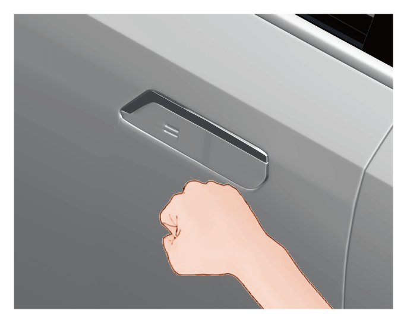

使用隐藏式门把手时，请阅读并遵守以下注意事项。
5.3.5 隐藏式门把手*
整车解锁，电动隐藏式门把手自动展开，拉动门把手即可打开车门。

警告+
锁车时请注意避免被门把手夹伤。
注意+
洗车时请将隐藏式门把手缩回，避免清洗过程中，门把手内部进水，导致车辆损坏。
冬季较低温度时，隐藏式门把手可能会结冰导致开启困难，建议按以下方式处理：
带钥匙靠近车辆时，车辆会自动检测到遥控钥匙，此时：
1.如果门把手与车门之间积聚有少量冰，门把手能电动展开。此时建议客户按遥控钥匙电动开闭门把手3次，除去残冰。
2.如果门把手与车门之间积聚有较多冰，门把手不能电动展开。此时建议客户按遥控钥匙尝试电动展开门把手3次，如果门把手还不能电动展开，需要按以下操作手动除冰。

–采用环形模式作业，以拳头底部稍微用力击打车门把手的周圈，破坏并释放积聚的冰，按遥控钥匙电动展开门把手。
–根据需要增加击打的强度，重复上述步骤1。
警告+
–击打车门把手周圈的力量切不可大致引发车门钣金凹陷的程度。
–车门把手可以活动后，再开合几次门把手，除去残冰，确保门把手能完全缩回到位。上车后，在驾车离开前检查车门是否已完全关闭。
— 页面到底了 —